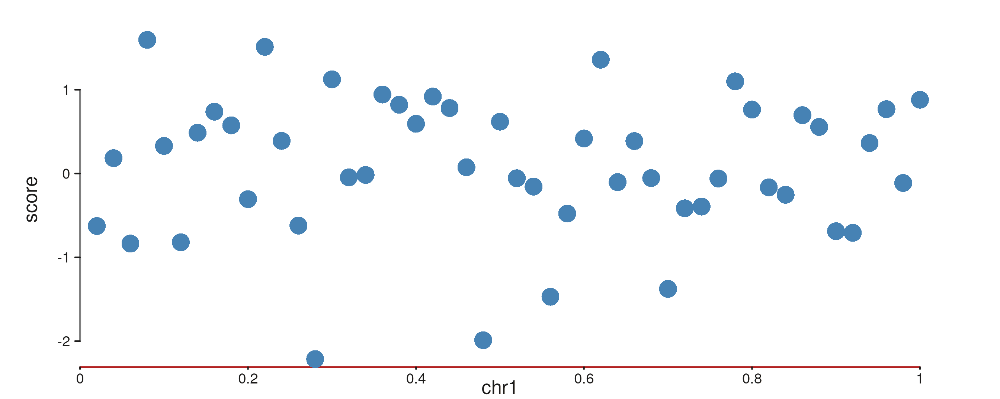
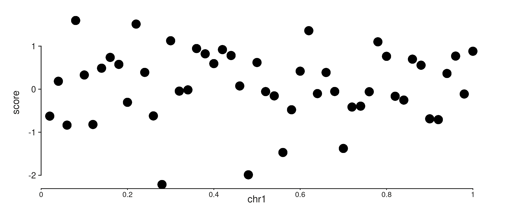
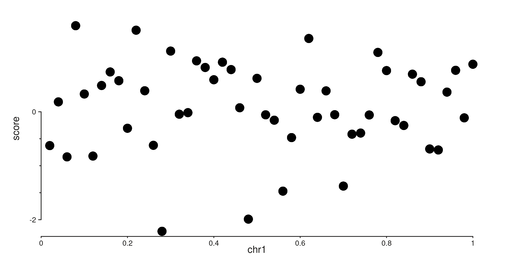
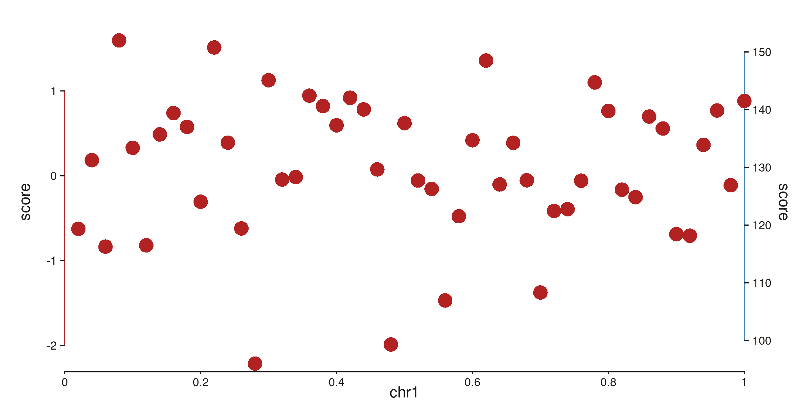
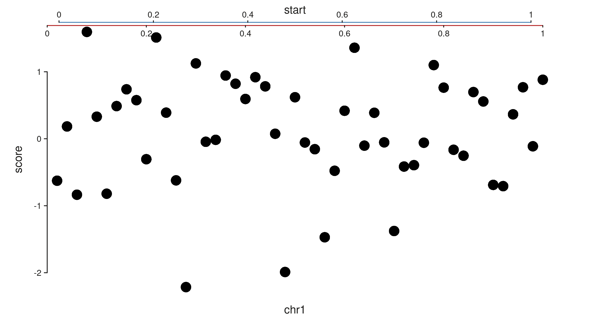
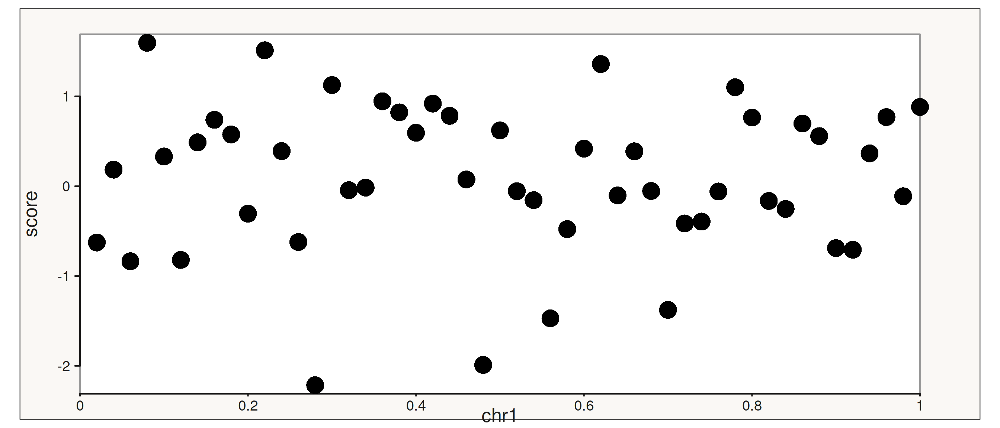
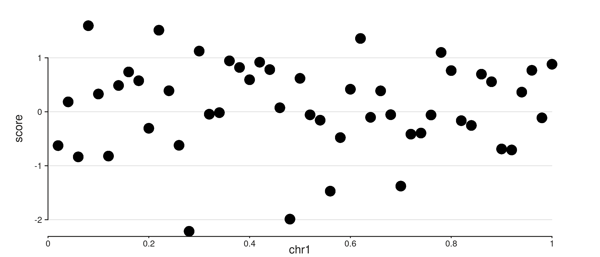
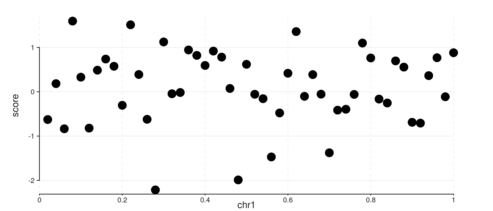
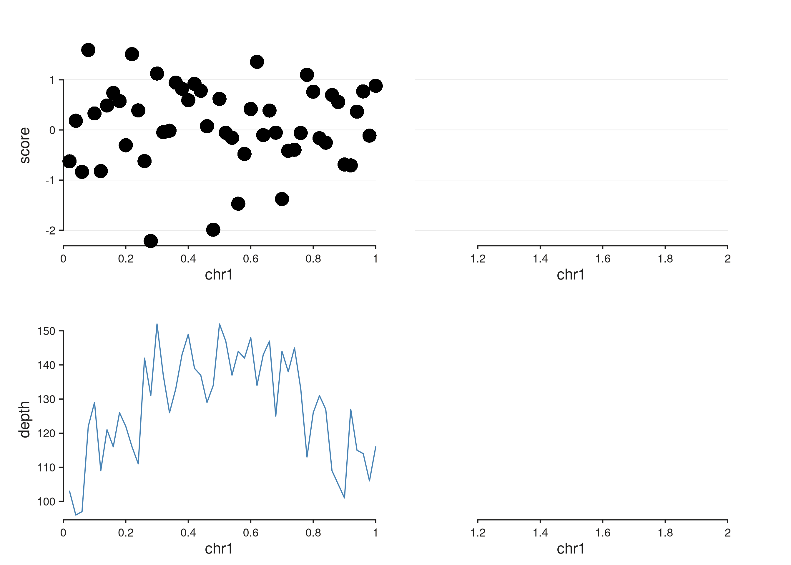
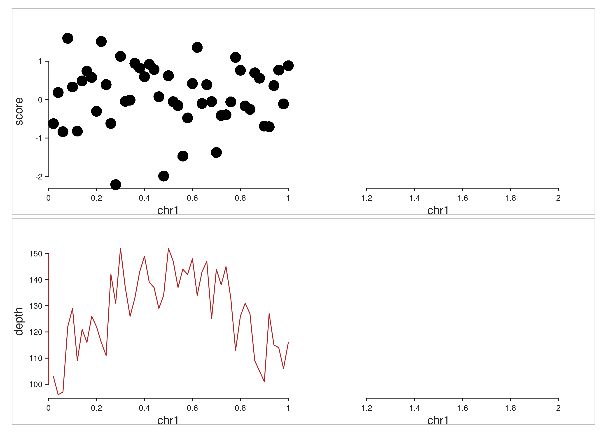

library(SeqPlotR)
#>
#> Attaching package: 'SeqPlotR'
#> The following object is masked from 'package:base':
#>
#> %||%
library(GenomicRanges)
#> Loading required package: stats4
#> Loading required package: BiocGenerics
#> Loading required package: generics
#>
#> Attaching package: 'generics'
#> The following objects are masked from 'package:base':
#>
#> as.difftime, as.factor, as.ordered, intersect, is.element, setdiff,
#> setequal, union
#>
#> Attaching package: 'BiocGenerics'
#> The following objects are masked from 'package:stats':
#>
#> IQR, mad, sd, var, xtabs
#> The following objects are masked from 'package:base':
#>
#> anyDuplicated, aperm, append, as.data.frame, basename, cbind,
#> colnames, dirname, do.call, duplicated, eval, evalq, Filter, Find,
#> get, grep, grepl, is.unsorted, lapply, Map, mapply, match, mget,
#> order, paste, pmax, pmax.int, pmin, pmin.int, Position, rank,
#> rbind, Reduce, rownames, sapply, saveRDS, table, tapply, unique,
#> unsplit, which.max, which.min
#> Loading required package: S4Vectors
#>
#> Attaching package: 'S4Vectors'
#> The following object is masked from 'package:utils':
#>
#> findMatches
#> The following objects are masked from 'package:base':
#>
#> expand.grid, I, unname
#> Loading required package: IRanges
#> Loading required package: SeqinfoSeqPlotR’s aes() argument on seq_plot() and
seq_track() accepts ggplot2-style hierarchical theme keys.
Dotted paths like axis.x1.line.col let you target any axis
component, and broader keys (axis.line.col,
axis.x.line.col) cascade into the more specific slots. This
vignette shows the hierarchy, scale controls (expansion, break
placement, axis capping), secondary axes, and track chrome.
A shared example
The toy dataset pairs two incompatible measurements on the same genomic positions: a z-scored signal centered around zero, and a read-depth count in the 50–200 range. Plotting them on a single y-scale would crush one of them, so this is a natural fit for a secondary axis.
win <- GRanges("chr1", IRanges(1, 1e6))
d <- GRanges("chr1",
IRanges(seq(2e4, 1e6, by = 2e4), width = 1),
score = rnorm(50),
depth = round(rpois(50, 100) +
40 * sin(seq(0, pi, length.out = 50))))The %+% operator returns a seq_plot
invisibly, so to render a plot we assign the expression to
p and then reference it as the last line of the chunk —
knitr auto-prints the result via print.SeqPlot(), which
calls $plot() on the current device.
1. Hierarchical theme keys
The axis namespace has four levels of specificity:
| Level | Example | Meaning |
|---|---|---|
| Root | axis.line.col |
All axes |
| Dim | axis.x.line.col |
Both x axes (x1 + x2) |
| Side | axis.x1.line.col |
Primary x only |
axis.x2.line.col |
Secondary x only |
When SeqPlotR resolves a key, it walks from most specific to
most general: axis.x1.line.col ->
axis.x.line.col -> axis.line.col ->
built-in default. The first match wins.
p <- seq_plot() %+%
seq_track(data = d, windows = win,
aesthetics = aes(
axis.line.col = "grey50", # all axes
axis.y.line.lwd = 1.5, # both y axes
axis.x1.line.col = "firebrick" # primary x overrides
)) %+%
seq_point(map(x = start, y = score),
aesthetics = aes(color = "steelblue"))
p
2. Nested aes() values
The same keys can be written in a nested form.
aes(axis.x = aes(position = "top")) is identical to
aes(axis.x.position = "top"), so components can be grouped
by topic rather than spelled out one by one.
p <- seq_plot() %+%
seq_track(data = d, windows = win,
aesthetics = aes(
axis.y = aes(
line = aes(col = "grey20", lwd = 1.2),
text = aes(size = 0.7)
)
)) %+%
seq_point(map(x = start, y = score))
p
3. Scale expansion, breaks, and caps
Each axis’s scale options live under
axis.<side>.scale.*:
-
scale.expand = c(mul, add)— proportional (multimes the data range) and absolute padding around the data. Defaultc(0.025, 0). -
scale.breaks— explicit break positions. Otherwisen_breakspickspretty()breaks. -
scale.minor_breaks— scalar (number of sub-divisions) or explicit vector. -
scale.cap— where the axis line starts and stops:-
"capped"(default) runs from the first to the last break. -
"full"spans the expanded plot range. -
"exact"spans the unexpanded data range. -
"ticks"suppresses the axis line and shows only tick marks.
-
p <- seq_plot() %+%
seq_track(data = d, windows = win,
aesthetics = aes(
axis.y1.scale.limits = c(-3, 3),
axis.y1.scale.breaks = c(-2, 0, 2),
axis.y1.scale.cap = "capped",
axis.y1.scale.minor_breaks = 3
)) %+%
seq_point(map(x = start, y = score))
p
Equivalent to the above if you prefer an explicit scale object:
4. Secondary axes
An element opts in to the secondary axis by adding
axis.x = 2 or axis.y = 2 to its
map(). SeqPlotR then infers an independent scale from those
elements, draws a second axis, and positions the element against the new
scale.
The default positions are x1 = bottom, x2 = top, y1 = left, y2 = right.
p <- seq_plot() %+%
seq_track(data = d, windows = win,
aesthetics = aes(
axis.y1.line.col = "firebrick",
axis.y2.line.col = "steelblue"
)) %+%
seq_point(map(x = start, y = score),
aesthetics = aes(color = "firebrick")) %+%
seq_line(map(x = start, y = depth, axis.y = 2),
aesthetics = aes(color = "steelblue", linewidth = 1.2))
p
#> 50 out-of-bounds data points excluded! (seq_line)Moving an axis to an unusual position is just a matter of setting its
position. Both axes on the same side stack automatically,
with the lower-indexed axis (x1, y1) sitting closer to the panel.
p <- seq_plot() %+%
seq_track(data = d, windows = win,
aesthetics = aes(
axis.x1.position = "top",
axis.x2.position = "top",
axis.x1.line.col = "firebrick",
axis.x2.line.col = "steelblue"
),
scale_x2 = seq_scale_continuous(limits = c(0, 1))) %+%
seq_point(map(x = start, y = score))
p
5. Track and window chrome
The track.* namespace controls the rectangle shared by
all windows; track.window.* controls each per-window panel
rectangle. These do not inherit from each other — they’re semantically
distinct.
p <- seq_plot() %+%
seq_track(data = d, windows = win,
aesthetics = aes(
track.background.fill = "#faf8f5",
track.border.col = "grey30",
track.window.background.fill = "white",
track.window.border.col = "grey60"
)) %+%
seq_point(map(x = start, y = score))
p
6. Gridlines
Gridlines are drawn at the same positions as axis ticks, but are off
by default. Enable them per dimension with
axis.x.gridline = TRUE or
axis.y.gridline = TRUE in aes() on either
seq_plot() or seq_track(). They follow the
same dotted-path hierarchy as every other axis key —
axis.gridline.* sets base defaults, and
axis.x.gridline.* / axis.y.gridline.* override
per dimension.
p <- seq_plot() %+%
seq_track(data = d, windows = win,
aesthetics = aes(
axis.y.gridline = TRUE,
axis.y.gridline.color = "grey80",
axis.y.gridline.lwd = 0.5
)) %+%
seq_point(map(x = start, y = score))
p
You can also pass an aes() directly as the value.
Supplying any styling sub-keys is enough to enable the gridline; no
separate = TRUE is needed:
p <- seq_plot() %+%
seq_track(data = d, windows = win,
aesthetics = aes(
axis.y.gridline = aes(color = "grey80", lwd = 0.5)
)) %+%
seq_point(map(x = start, y = score))
p
Both axes can be shown together. A shared base style comes from
axis.gridline.*, and per-dimension keys override it:
p <- seq_plot() %+%
seq_track(data = d, windows = win,
aesthetics = aes(
axis.y.gridline = TRUE,
axis.x.gridline = TRUE,
axis.gridline.color = "grey85",
axis.gridline.lwd = 0.4,
axis.x.gridline.lty = 2 # dashed x only
)) %+%
seq_point(map(x = start, y = score))
p
Gridlines respect the standard plot-level vs track-level theme
precedence. Here a plot-level axis.y.gridline = TRUE is
suppressed on track B via a track-level override:
win2 <- GRanges("chr1", IRanges(c(1, 1e6 + 1), c(1e6, 2e6)))
p <- seq_plot(aesthetics = aes(axis.y.gridline = TRUE,
axis.gridline.color = "grey85")) %+%
seq_track(track_id = "A", data = d, windows = win2) %+%
seq_point(map(x = start, y = score)) %__%
seq_track(track_id = "B", data = d, windows = win2,
aesthetics = aes(axis.y.gridline = FALSE)) %+%
seq_line(map(x = start, y = depth), aesthetics = aes(color = "steelblue"))
p
7. Plot-level vs track-level themes
Themes set on seq_plot() apply to every track; themes on
seq_track() override them for that track only. This is the
same precedence as ggplot2’s theme() plus
per-facet overrides.
win2 <- GRanges("chr1", IRanges(c(1, 1e6 + 1), c(1e6, 2e6)))
p <- seq_plot(aesthetics = aes(
axis.line.col = "grey30",
axis.text.size = 0.55,
track.border.col = "grey70"
)) %+%
seq_track(track_id = "A", data = d, windows = win2) %+%
seq_point(map(x = start, y = score)) %__%
seq_track(track_id = "B", data = d, windows = win2,
aesthetics = aes(axis.y1.line.col = "firebrick")) %+%
seq_line(map(x = start, y = depth), aesthetics = aes(color = "firebrick"))
p
Cheat sheet
- Any axis component:
axis[.side].{line,ticks,text,title}.{col,lwd,size,angle,visible}. - Any scale option:
axis[.side].scale.{limits,breaks,minor_breaks,expand,cap,n_breaks}. - Track position:
axis.<side>.position = "top"|"bottom"|"left"|"right". - Route an element to a secondary axis:
map(axis.x = 2)ormap(axis.y = 2). - Flat and nested forms are equivalent:
aes(axis.x.line.col = "red")==aes(axis.x = aes(line = aes(col = "red"))). - Track chrome:
track.{background,border}.{fill,col,lwd,alpha}andtrack.window.{background,border}.{fill,col,lwd,alpha}. - Gridlines:
axis.x.gridline = TRUE/axis.y.gridline = TRUEto enable; style viaaxis.[x|y].gridline.{color, lwd, lty, alpha}inheriting fromaxis.gridline.*. Passingaes(color, lwd, ...)as the value also enables.